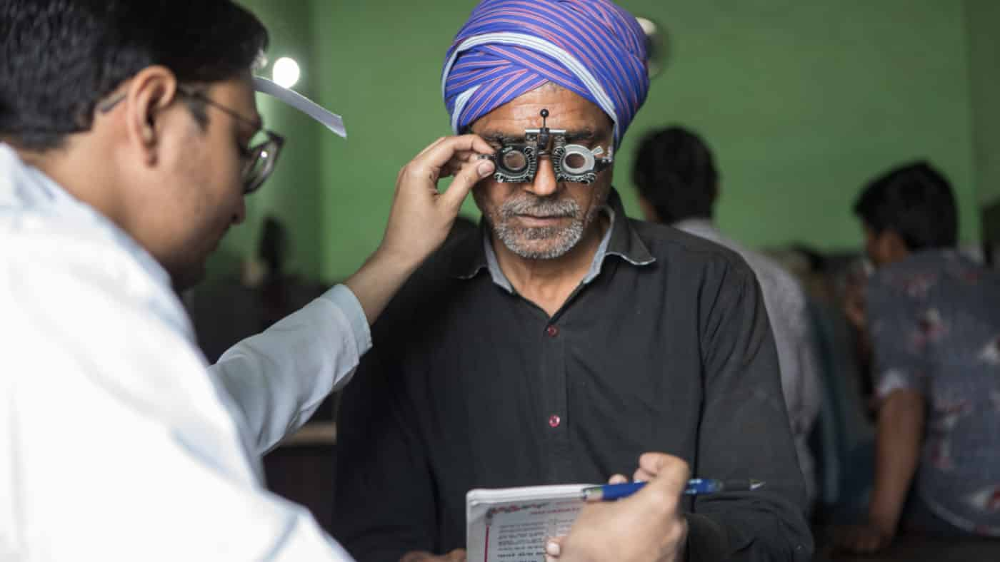

Sight Savers
Contact us
Protecting sight and fighting for disability rights
Blindness is an important cause and the effect of poverty. We work with poor and marginalised communities in developing countries. At Sightsavers, we believe that people should not go blind unnecessarily. We prevent, treat and cure avoidable blindness and promote eye health.Sightsavers is an international non-governmental organisation that works with partners in developing countries to treat and prevent avoidable blindness, and promote equality for people with visual impairments and other disabilities.Sightsavers vision is of a world where no one is blind from avoidable causes, and where people with disabilities participate equally in society. A large number of People with Disabilities , especially those who suffer from visual disability, are reeling under poverty, economic and educational deprivation, and are concentrated in the most under-served parts of the country. Sightsavers in India, through its thematic portfolio of Eye Health, Inclusive Education for visually impaired children and Social Inclusion of People with Disabilities, aims to have a significant impact on the lives of the economically and socially marginalised communities and also seeks to influence the policies and practices with regard to disabilities in India. Systemic social work is at the core of Sightsavers as a not-for-profit organisation. We are committed to building sustainable programme models, which have been endorsed and adopted by the government in our states of operation. Sightsavers focusses on collaborating with various departments of the state governments to scale up operations for its programmes. Target Population & Geography Blindness is an important cause and the effect of poverty. We work with poor and marginalised communities. Sightsavers has supported the treatment of millions of people with eye disorders.
About Sightsavers
Sightsavers is an international organisation that works with partners in more than 30 countries to eliminate avoidable blindness, and fight for the rights and needs of people with disability.After witnessing a significant success in the first year and grooming three bright and competent young ophthalmologists, Sightsavers India, a leading global development organization, has opened application for Sightsavers India Fellowship Program 2020. This fellowship is designed to enhance awareness about eye care and aims to groom the young ophthalmologists through an innovative course of mentoring and surgical exposure to expand their perspectives on rural eye health and to shape the youth into promising and skilled ophthalmologists. The fellowship is designed in a way that gives an opportunity to master the craft as a clinician and a surgeon.
Sightsavers India Fellowship Program 2020 is a promising career opportunity for ophthalmologists. It aims to take five selected fellows through an exciting journey of 24 months. The selected fellows will be placed in one of the 7 states Madhya Pradesh, Uttar Pradesh, Bihar, Jharkhand, West Bengal, Chhattisgarh and Odisha.Over a period of 24 months, the fellows will experience a structured skill enhancement and mentoring process covering not only clinical and surgical ophthalmology but also managerial and holistic life skills. The process involves skills up-gradation components and personal interactions with eminent leaders in eye care and development sector. Every stage of the fellowship program will optimize learning that will help the fellows transform into all-rounder seasoned professionals. Selected fellows will receive an attractive appreciative stipend through the fellowship period.
In India since 1966
Sightsavers' work in India has enabled thousands of people to lead lives of independence and dignity. We have been working with local partners to strengthen organisations and communities, and have supported the treatment of millions of people with eye disorders. We have educated, counseled, trained and rehabilitated people who are visually impaired or blind, and helped extend the reach of eye services to the least served areas of India.We have been working in India since 1966 to eliminate avoidable blindness and to ensure that people who are irreversibly blind are supported adequately to lead lives of independence and dignity. Sightsavers focusses on collaborating with various departments of the state governments to scale up operations for eye health, inclusive education and social inclusion our three core areas of work. .

See what we are doing

Our Values
| Protecting Sight | Equal Opportunities | Collaboration |
|---|---|---|
| Blindness is an important cause and the effect of poverty. We work with poor and marginalised communities in developing countries. At Sightsavers, we believe that people should not go blind unnecessarily. We prevent, treat and cure avoidable blindness and promote eye health. | People with visual impairment should be able to develop their potential to the full. We work with disabled people and others to promote equal rights and opportunities. We strengthen organisations and commnities to develop practical and enduring solutions. | We achieve much more when we collaborate. We forge alliances and partnerships to ensure a positive and long term impact on people's lives. Our supporters are a key part of the solution. We work together to accomplish our goals. |
All funds raised by Sightsavers may be pooled together and allocated towards eye care, education and social inclusion initiatives across India. © 2019 Sightsavers is registered in India as a "Royal Commonwealth Society for the Blind" | Registration No. E4330.